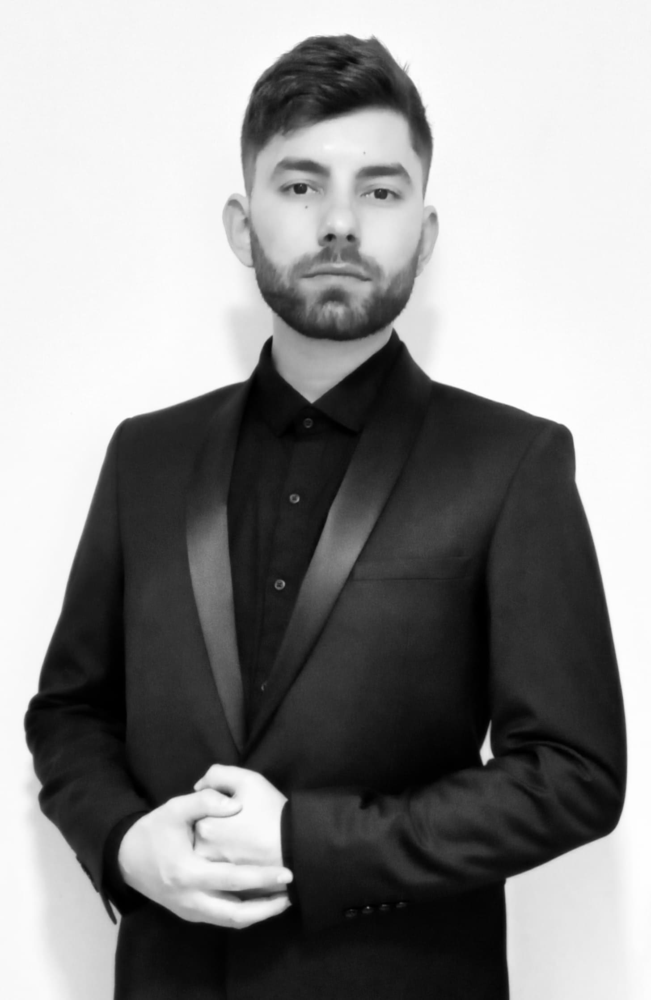

Marcos Miskulin
(tenor)

Nacido en Bahía Blanca, comenzó su incursión en el canto en el año 1998
ingresando al Coro de Niños de la Cooperativa Obrera, dirigido por el Maestro Carmelo
Fioriti.
En el año 2011 ingresó al Conservatorio Provincial de Música de Bahía Blanca
como estudiante de Canto Lírico y Camarístico, de la mano de los Mtros. Carmelo
Fioriti en canto y Edgardo Matoso en repertorio. Desde el año 2017, paralelamente,
toma clases de técnica vocal con la Mtra. Irene Abreu Barceló.
Participó como solista junto al Coro Estable y la Orquesta Sinfónica Provincial
de los Organismos Artísticos del Sur, en seis oportunidades: en 2016 interpretó la Misa
en do mayor (Opus 86) de Ludwig van Beethoven; mientras que, en 2017 lo hizo en la
Misa de la Coronación en do mayor (KV 317), y en 2019 con la obra Thamos, rey de
Egipto (KV 345/336a), ambas con música de Wolfgang Amadeus Mozart. Por otra
parte, en el año 2022 interpretó la Petite Messe Solennelle, de Gioachino Rossini;
también, dentro del proyecto multidisciplinario Soy Ópera (que tuvo su segunda
edición en 2023), encarnó el rol de Eneas en la ópera “Dido y Eneas” con música de
Henry Purcell y libreto de Nahum Tate. Cerró la temporada 2022 participando de la
Navidad Nuestra, de Ariel Ramírez y Félix Luna.
Desde el año 2021 integra las filas del Coro Estable de Bahía Blanca,
perteneciente a los Organismos Artísticos del Sur.